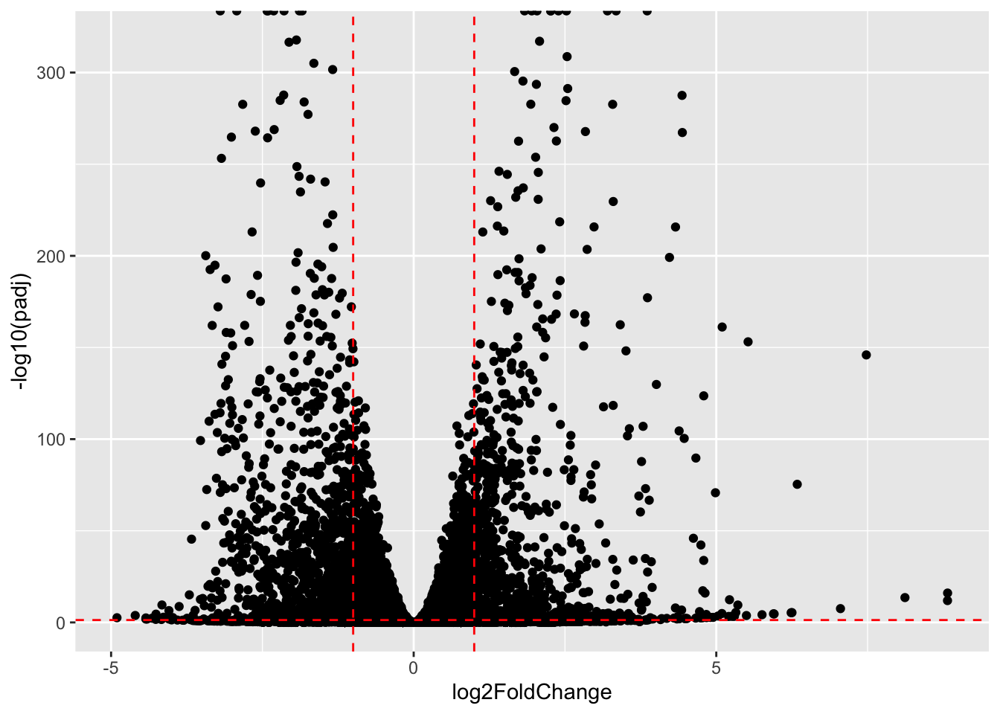
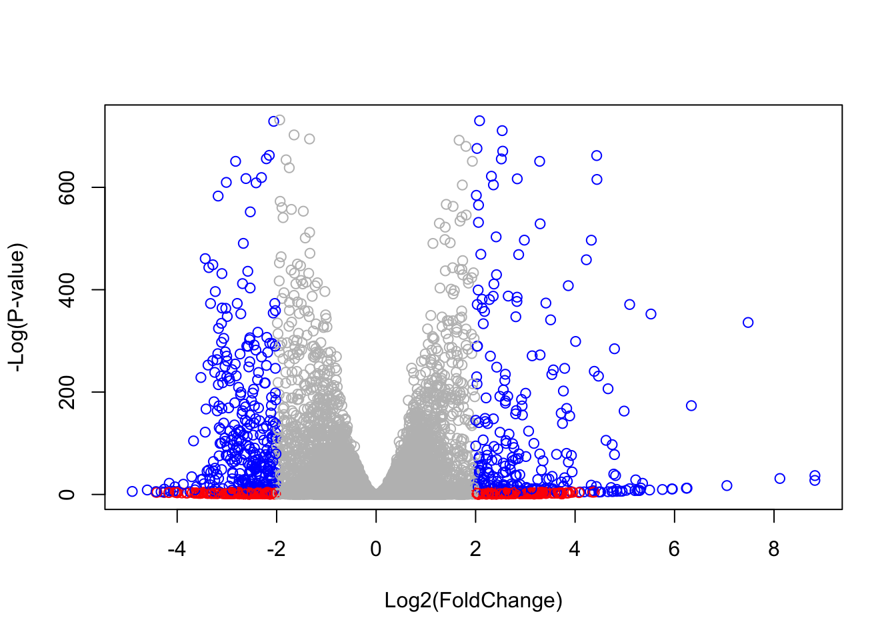
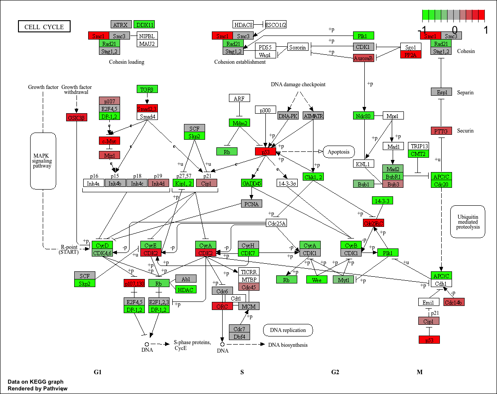
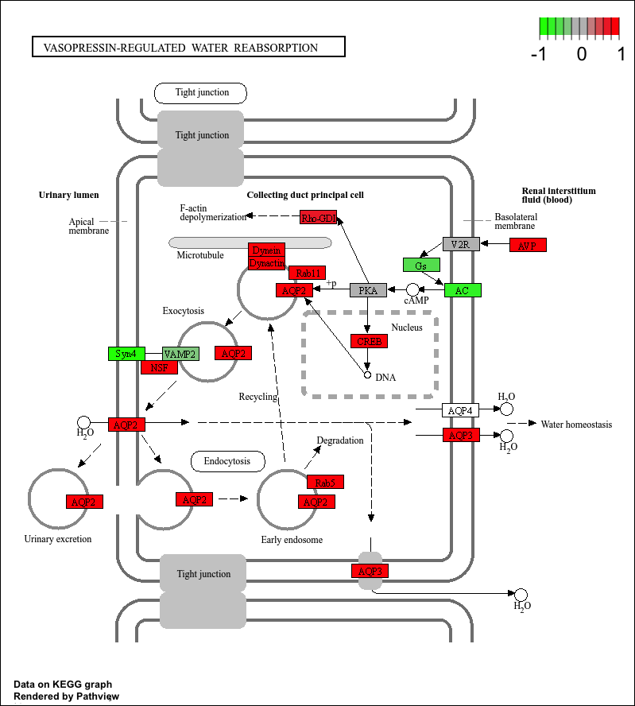
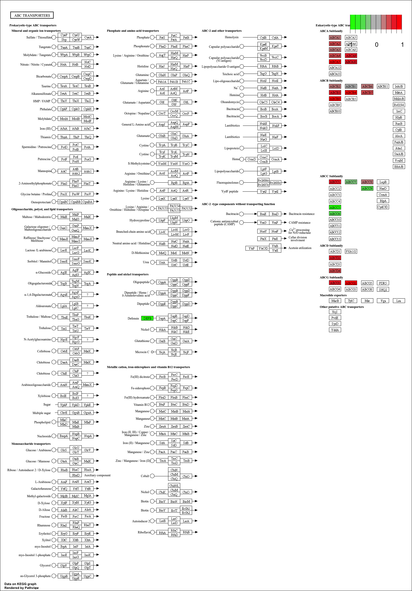
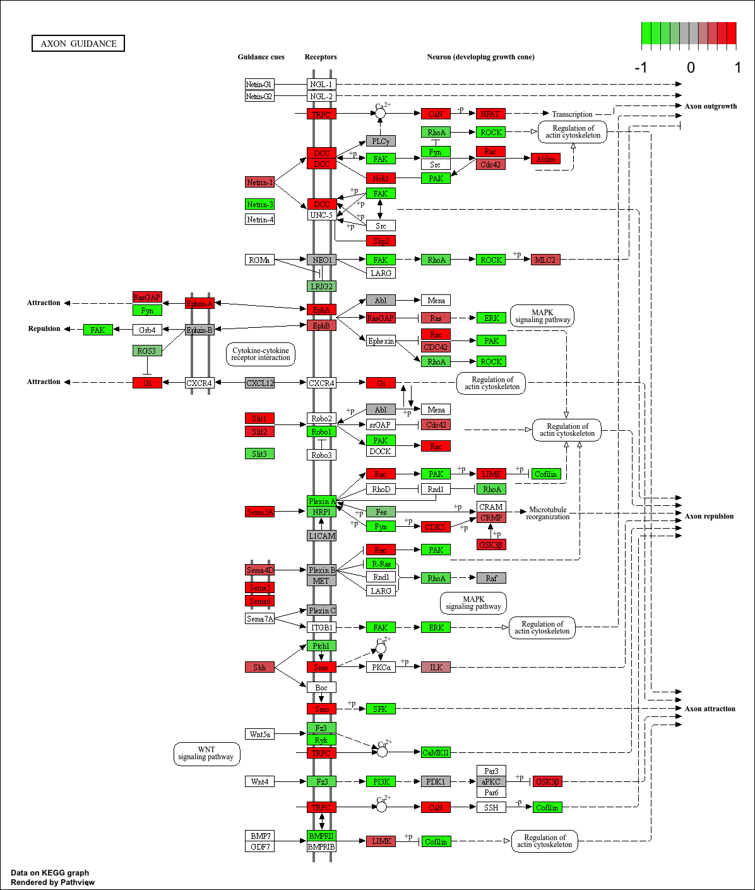
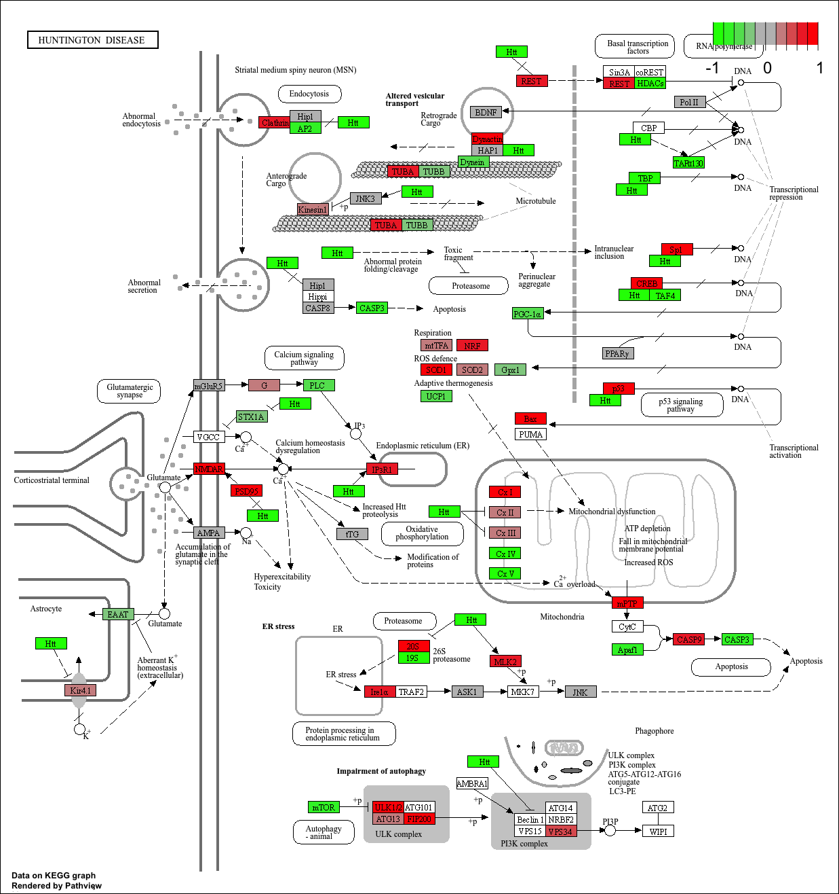
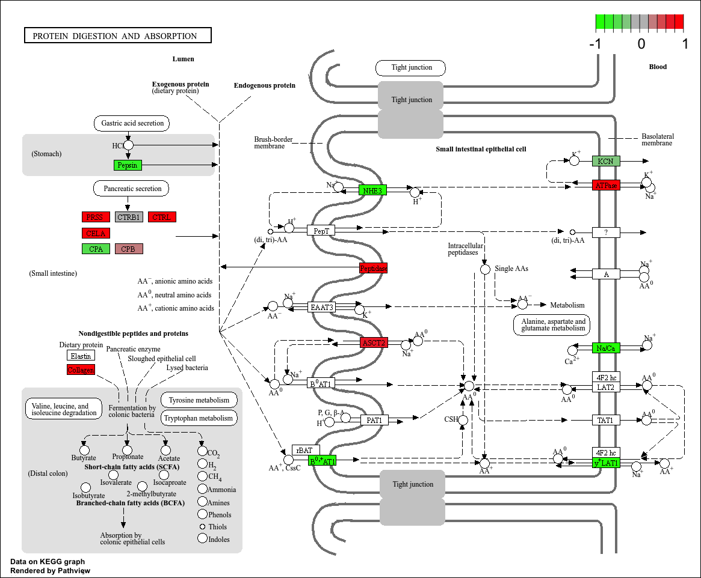
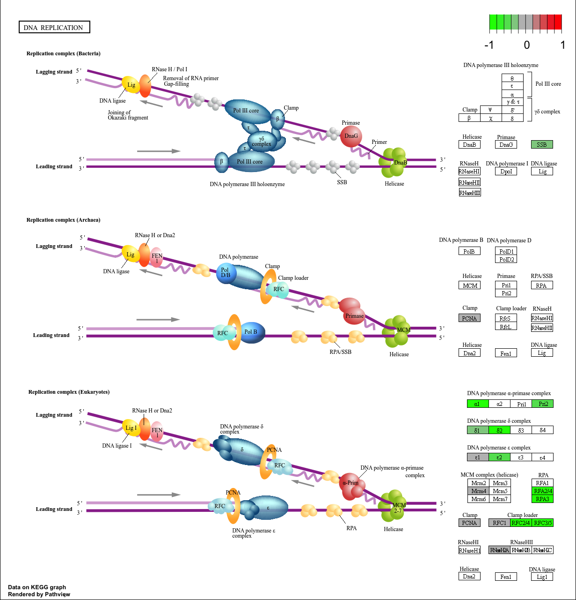
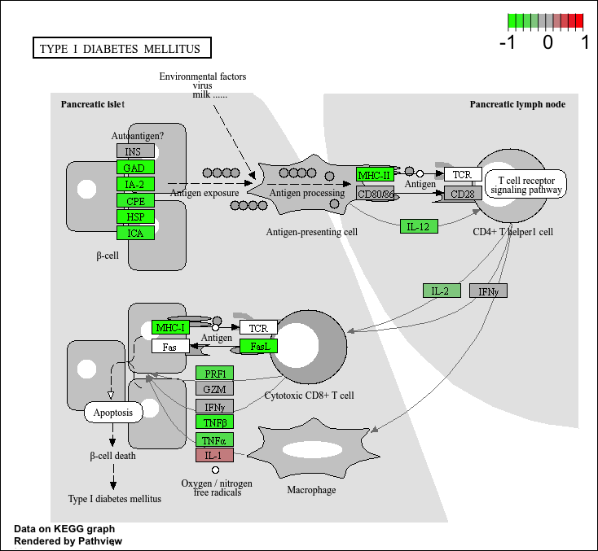

counts <- read.csv("GSE37704_featurecounts.csv")
metadata <- read.csv("GSE37704_metadata.csv")Class 14: RNASeq mini project
Background
Here we work through a complete RNASeq analysis project. The input data comes from a knock-down experiment of a HOX gene.
Data Import
Reading the counts and metadata csv files
Check on data structure
head(counts) ensgene length SRR493366 SRR493367 SRR493368 SRR493369 SRR493370
1 ENSG00000186092 918 0 0 0 0 0
2 ENSG00000279928 718 0 0 0 0 0
3 ENSG00000279457 1982 23 28 29 29 28
4 ENSG00000278566 939 0 0 0 0 0
5 ENSG00000273547 939 0 0 0 0 0
6 ENSG00000187634 3214 124 123 205 207 212
SRR493371
1 0
2 0
3 46
4 0
5 0
6 258metadata id condition
1 SRR493366 control_sirna
2 SRR493367 control_sirna
3 SRR493368 control_sirna
4 SRR493369 hoxa1_kd
5 SRR493370 hoxa1_kd
6 SRR493371 hoxa1_kdSome book-keeping is required as there looks to be a mis-match betweem metadata rows and counts columns
ncol(counts)[1] 8nrow(metadata)[1] 6Looks like we need to get rid of the first “length” column of our counts object.
cleancounts <- counts[ , -c(1, 2)]colnames(cleancounts)[1] "SRR493366" "SRR493367" "SRR493368" "SRR493369" "SRR493370" "SRR493371"metadata$id[1] "SRR493366" "SRR493367" "SRR493368" "SRR493369" "SRR493370" "SRR493371"all(colnames(cleancounts) == metadata$id)[1] TRUERemove zero count genes
There are lots of genes with zero counts. We can remove these from
head(cleancounts) SRR493366 SRR493367 SRR493368 SRR493369 SRR493370 SRR493371
1 0 0 0 0 0 0
2 0 0 0 0 0 0
3 23 28 29 29 28 46
4 0 0 0 0 0 0
5 0 0 0 0 0 0
6 124 123 205 207 212 258to.keep.inds <- rowSums(cleancounts) > 0
nonzero_counts <- cleancounts[to.keep.inds, ]DESeq analysis
Load the package
library(DESeq2)Loading required package: S4VectorsLoading required package: stats4Loading required package: BiocGenericsLoading required package: generics
Attaching package: 'generics'The following objects are masked from 'package:base':
as.difftime, as.factor, as.ordered, intersect, is.element, setdiff,
setequal, union
Attaching package: 'BiocGenerics'The following objects are masked from 'package:stats':
IQR, mad, sd, var, xtabsThe following objects are masked from 'package:base':
anyDuplicated, aperm, append, as.data.frame, basename, cbind,
colnames, dirname, do.call, duplicated, eval, evalq, Filter, Find,
get, grep, grepl, is.unsorted, lapply, Map, mapply, match, mget,
order, paste, pmax, pmax.int, pmin, pmin.int, Position, rank,
rbind, Reduce, rownames, sapply, saveRDS, table, tapply, unique,
unsplit, which.max, which.min
Attaching package: 'S4Vectors'The following object is masked from 'package:utils':
findMatchesThe following objects are masked from 'package:base':
expand.grid, I, unnameLoading required package: IRangesLoading required package: GenomicRangesLoading required package: SeqinfoLoading required package: SummarizedExperimentLoading required package: MatrixGenericsLoading required package: matrixStats
Attaching package: 'MatrixGenerics'The following objects are masked from 'package:matrixStats':
colAlls, colAnyNAs, colAnys, colAvgsPerRowSet, colCollapse,
colCounts, colCummaxs, colCummins, colCumprods, colCumsums,
colDiffs, colIQRDiffs, colIQRs, colLogSumExps, colMadDiffs,
colMads, colMaxs, colMeans2, colMedians, colMins, colOrderStats,
colProds, colQuantiles, colRanges, colRanks, colSdDiffs, colSds,
colSums2, colTabulates, colVarDiffs, colVars, colWeightedMads,
colWeightedMeans, colWeightedMedians, colWeightedSds,
colWeightedVars, rowAlls, rowAnyNAs, rowAnys, rowAvgsPerColSet,
rowCollapse, rowCounts, rowCummaxs, rowCummins, rowCumprods,
rowCumsums, rowDiffs, rowIQRDiffs, rowIQRs, rowLogSumExps,
rowMadDiffs, rowMads, rowMaxs, rowMeans2, rowMedians, rowMins,
rowOrderStats, rowProds, rowQuantiles, rowRanges, rowRanks,
rowSdDiffs, rowSds, rowSums2, rowTabulates, rowVarDiffs, rowVars,
rowWeightedMads, rowWeightedMeans, rowWeightedMedians,
rowWeightedSds, rowWeightedVarsLoading required package: BiobaseWelcome to Bioconductor
Vignettes contain introductory material; view with
'browseVignettes()'. To cite Bioconductor, see
'citation("Biobase")', and for packages 'citation("pkgname")'.
Attaching package: 'Biobase'The following object is masked from 'package:MatrixGenerics':
rowMediansThe following objects are masked from 'package:matrixStats':
anyMissing, rowMediansSet up DESeq object
dds <- DESeqDataSetFromMatrix(
countData = nonzero_counts,
colData = metadata,
design = ~ condition
)Warning in DESeqDataSet(se, design = design, ignoreRank): some variables in
design formula are characters, converting to factorsRun DESeq
dds <- DESeq(dds)estimating size factorsestimating dispersionsgene-wise dispersion estimatesmean-dispersion relationshipfinal dispersion estimatesfitting model and testingGet results
res <- results(dds)
head(res)log2 fold change (MLE): condition hoxa1 kd vs control sirna
Wald test p-value: condition hoxa1 kd vs control sirna
DataFrame with 6 rows and 6 columns
baseMean log2FoldChange lfcSE stat pvalue padj
<numeric> <numeric> <numeric> <numeric> <numeric> <numeric>
3 29.9136 0.1792571 0.3248215 0.551863 5.81042e-01 6.86555e-01
6 183.2296 0.4264571 0.1402658 3.040350 2.36304e-03 5.15718e-03
7 1651.1881 -0.6927205 0.0548465 -12.630156 1.43993e-36 1.76553e-35
8 209.6379 0.7297556 0.1318599 5.534326 3.12428e-08 1.13413e-07
9 47.2551 0.0405765 0.2718928 0.149237 8.81366e-01 9.19031e-01
10 11.9798 0.5428105 0.5215598 1.040744 2.97994e-01 4.03379e-01Data Visualization
Volcano plot
library(ggplot2)
ggplot(res) +
aes(log2FoldChange, -log(padj)) +
geom_point()Warning: Removed 1237 rows containing missing values or values outside the scale range
(`geom_point()`).
Add threshold lines for fold-change and P-values and color our subset of genes that make these throshold cut-off in the plot.
library(ggplot2)
res_df <- as.data.frame(res)
res_df$padj[is.na(res_df$padj)] <- 1
ggplot(res_df, aes(x = log2FoldChange, y = -log10(padj))) +
geom_point() +
geom_vline(xintercept = c(-1, 1), linetype = "dashed", color = "red") +
geom_hline(yintercept = -log10(0.05), linetype = "dashed", color = "red")
Improve this plot by completing the below code, which adds color and axis labels.
# Make a color vector for all genes
mycols <- rep("gray", nrow(res))
# Color red for |log2FC| > 2
mycols[ abs(res$log2FoldChange) > 2 ] <- "red"
# Color blue for padj < 0.01 AND |log2FC| > 2
inds <- (res$padj < 0.01) & (abs(res$log2FoldChange) > 2)
mycols[inds] <- "blue"
# Volcano plot
plot(res$log2FoldChange,
-log(res$padj),
col = mycols,
xlab = "Log2(FoldChange)",
ylab = "-Log(P-value)")
Add annotation
Add gene symbols and entrez ids
library(AnnotationDbi)
library(org.Hs.eg.db)head(
mapIds(x = org.Hs.eg.db,
keys = row.names(res),
column = "SYMBOL",
keytype = "ENTREZID",
multiVals = "first"),
10
)'select()' returned 1:1 mapping between keys and columns 3 6 7 8 9 10 11
NA NA NA NA "NAT1" "NAT2" "NATP"
12 13 14
"SERPINA3" "AADAC" "AAMP" res$symbol <- mapIds(
x = org.Hs.eg.db,
keys = row.names(res),
keytype = "ENTREZID",
column = "SYMBOL",
multiVals = "first"
)'select()' returned 1:1 mapping between keys and columnsres$entrez <- mapIds(
x = org.Hs.eg.db,
keys = row.names(res),
keytype = "ENTREZID",
column = "ENTREZID",
multiVals = "first"
)Pathway Analysis
run gage analysis
library(pathview)library(gage)
library(gageData)
data(kegg.sets.hs)
data(sigmet.idx.hs)
kegg.sets.hs = kegg.sets.hs[sigmet.idx.hs]
head(kegg.sets.hs, 3)$`hsa00232 Caffeine metabolism`
[1] "10" "1544" "1548" "1549" "1553" "7498" "9"
$`hsa00983 Drug metabolism - other enzymes`
[1] "10" "1066" "10720" "10941" "151531" "1548" "1549" "1551"
[9] "1553" "1576" "1577" "1806" "1807" "1890" "221223" "2990"
[17] "3251" "3614" "3615" "3704" "51733" "54490" "54575" "54576"
[25] "54577" "54578" "54579" "54600" "54657" "54658" "54659" "54963"
[33] "574537" "64816" "7083" "7084" "7172" "7363" "7364" "7365"
[41] "7366" "7367" "7371" "7372" "7378" "7498" "79799" "83549"
[49] "8824" "8833" "9" "978"
$`hsa00230 Purine metabolism`
[1] "100" "10201" "10606" "10621" "10622" "10623" "107" "10714"
[9] "108" "10846" "109" "111" "11128" "11164" "112" "113"
[17] "114" "115" "122481" "122622" "124583" "132" "158" "159"
[25] "1633" "171568" "1716" "196883" "203" "204" "205" "221823"
[33] "2272" "22978" "23649" "246721" "25885" "2618" "26289" "270"
[41] "271" "27115" "272" "2766" "2977" "2982" "2983" "2984"
[49] "2986" "2987" "29922" "3000" "30833" "30834" "318" "3251"
[57] "353" "3614" "3615" "3704" "377841" "471" "4830" "4831"
[65] "4832" "4833" "4860" "4881" "4882" "4907" "50484" "50940"
[73] "51082" "51251" "51292" "5136" "5137" "5138" "5139" "5140"
[81] "5141" "5142" "5143" "5144" "5145" "5146" "5147" "5148"
[89] "5149" "5150" "5151" "5152" "5153" "5158" "5167" "5169"
[97] "51728" "5198" "5236" "5313" "5315" "53343" "54107" "5422"
[105] "5424" "5425" "5426" "5427" "5430" "5431" "5432" "5433"
[113] "5434" "5435" "5436" "5437" "5438" "5439" "5440" "5441"
[121] "5471" "548644" "55276" "5557" "5558" "55703" "55811" "55821"
[129] "5631" "5634" "56655" "56953" "56985" "57804" "58497" "6240"
[137] "6241" "64425" "646625" "654364" "661" "7498" "8382" "84172"
[145] "84265" "84284" "84618" "8622" "8654" "87178" "8833" "9060"
[153] "9061" "93034" "953" "9533" "954" "955" "956" "957"
[161] "9583" "9615" We need a named vector as input for gage
Foldchanges = res$log2FoldChange
names(Foldchanges) = res$entrez
head(Foldchanges) 3 6 7 8 9 10
0.17925708 0.42645712 -0.69272046 0.72975561 0.04057653 0.54281049 Now, let’s run the gage pathway analysis.
keggres = gage(Foldchanges, gsets=kegg.sets.hs)Look at the object returned from gage().
attributes(keggres)$names
[1] "greater" "less" "stats" Look at the first few down (less) pathways
head(keggres$less) p.geomean stat.mean p.val
hsa03030 DNA replication 0.01885846 -2.173571 0.01885846
hsa03430 Mismatch repair 0.04579401 -1.743605 0.04579401
hsa03410 Base excision repair 0.05908254 -1.598886 0.05908254
hsa04120 Ubiquitin mediated proteolysis 0.06440557 -1.528736 0.06440557
hsa00360 Phenylalanine metabolism 0.11126857 -1.250743 0.11126857
hsa04510 Focal adhesion 0.12267443 -1.164165 0.12267443
q.val set.size exp1
hsa03030 DNA replication 0.8745476 17 0.01885846
hsa03430 Mismatch repair 0.8745476 16 0.04579401
hsa03410 Base excision repair 0.8745476 20 0.05908254
hsa04120 Ubiquitin mediated proteolysis 0.8745476 65 0.06440557
hsa00360 Phenylalanine metabolism 0.8745476 14 0.11126857
hsa04510 Focal adhesion 0.8745476 142 0.12267443Each keggres\(less* and *keggres\)greater object is a data matrix whose rows are gene sets ranked by p-value. The top down-regulated (“less”) pathway is Cell cycle (hsa04110).
Now we use pathview() to visualize a KEGG pathway with our RNA-Seq expression data overlaid. We manually provide the pathway ID—in this case hsa04110 from the “Cell cycle” pathway identified above.
pathview(gene.data=Foldchanges, pathway.id="hsa04110")'select()' returned 1:1 mapping between keys and columnsInfo: Working in directory /Users/jennyzhou/Desktop/BIMM 143/github/Class 14Info: Writing image file hsa04110.pathview.png

A different PDF based output of the same data
pathview(gene.data=Foldchanges, pathway.id="hsa04110", kegg.native=FALSE)'select()' returned 1:1 mapping between keys and columnsWarning: reconcile groups sharing member nodes! [,1] [,2]
[1,] "9" "300"
[2,] "9" "306"Info: Working in directory /Users/jennyzhou/Desktop/BIMM 143/github/Class 14Info: Writing image file hsa04110.pathview.pdfNow we extract the top five up-regulated pathways and pull out their KEGG pathway IDs for use with pathview().
keggrespathways <- rownames(keggres$greater)[1:5]
keggresids = substr(keggrespathways, start=1, stop=8)
keggresids[1] "hsa04962" "hsa02010" "hsa04360" "hsa04974" "hsa00970"Lets pass these IDs in keggresids to the pathview() function to draw plots for all the top 5 pathways.
pathview(gene.data=Foldchanges, pathway.id=keggresids, species="hsa")'select()' returned 1:1 mapping between keys and columnsInfo: Working in directory /Users/jennyzhou/Desktop/BIMM 143/github/Class 14Info: Writing image file hsa04962.pathview.png'select()' returned 1:1 mapping between keys and columnsInfo: Working in directory /Users/jennyzhou/Desktop/BIMM 143/github/Class 14Info: Writing image file hsa02010.pathview.png'select()' returned 1:1 mapping between keys and columnsInfo: Working in directory /Users/jennyzhou/Desktop/BIMM 143/github/Class 14Info: Writing image file hsa04360.pathview.png'select()' returned 1:1 mapping between keys and columnsInfo: Working in directory /Users/jennyzhou/Desktop/BIMM 143/github/Class 14Info: Writing image file hsa04974.pathview.pngInfo: Downloading xml files for hsa00970, 1/1 pathways..Info: Downloading png files for hsa00970, 1/1 pathways..'select()' returned 1:1 mapping between keys and columnsInfo: Working in directory /Users/jennyzhou/Desktop/BIMM 143/github/Class 14Info: Writing image file hsa00970.pathview.png  
 
Q. Can you do the same procedure as above to plot the pathview figures for the top 5 down-reguled pathways?
# Get the names of the top 5 "less/down" pathways
keggrespathways.down <- rownames(keggres$less)[1:5]
# Extract the 8-character KEGG IDs (e.g. "hsa04110")
keggresids.down <- substr(keggrespathways.down, start = 1, stop = 8)
keggresids.down[1] "hsa03030" "hsa03430" "hsa03410" "hsa04120" "hsa00360"# Draw pathview figures for the top 5 down-regulated pathways
pathview(gene.data = Foldchanges,
pathway.id = keggresids.down,
species = "hsa")'select()' returned 1:1 mapping between keys and columnsInfo: Working in directory /Users/jennyzhou/Desktop/BIMM 143/github/Class 14Info: Writing image file hsa03030.pathview.png'select()' returned 1:1 mapping between keys and columnsInfo: Working in directory /Users/jennyzhou/Desktop/BIMM 143/github/Class 14Info: Writing image file hsa03430.pathview.pngInfo: Downloading xml files for hsa03410, 1/1 pathways..Info: Downloading png files for hsa03410, 1/1 pathways..'select()' returned 1:1 mapping between keys and columnsInfo: Working in directory /Users/jennyzhou/Desktop/BIMM 143/github/Class 14Info: Writing image file hsa03410.pathview.pngInfo: Downloading xml files for hsa04120, 1/1 pathways..Info: Downloading png files for hsa04120, 1/1 pathways..'select()' returned 1:1 mapping between keys and columnsInfo: Working in directory /Users/jennyzhou/Desktop/BIMM 143/github/Class 14Info: Writing image file hsa04120.pathview.pngInfo: Downloading xml files for hsa00360, 1/1 pathways..Info: Downloading png files for hsa00360, 1/1 pathways..'select()' returned 1:1 mapping between keys and columnsInfo: Working in directory /Users/jennyzhou/Desktop/BIMM 143/github/Class 14Info: Writing image file hsa00360.pathview.png  etc.
GO terms
Same analysis but using GO genesets rather than KEGG
data(go.sets.hs)
data(go.subs.hs)
# Focus on Biological Process subset of GO
gobpsets = go.sets.hs[go.subs.hs$BP]
gobpres = gage(Foldchanges, gsets=gobpsets, same.dir=TRUE)head(gobpres$less) p.geomean stat.mean
GO:0030823 regulation of cGMP metabolic process 0.002716208 -3.086595
GO:0030826 regulation of cGMP biosynthetic process 0.006476850 -2.728670
GO:0006182 cGMP biosynthetic process 0.009829755 -2.448640
GO:0046068 cGMP metabolic process 0.010028138 -2.409060
GO:0034329 cell junction assembly 0.013213017 -2.235413
GO:0018205 peptidyl-lysine modification 0.014979994 -2.192053
p.val q.val
GO:0030823 regulation of cGMP metabolic process 0.002716208 0.8422634
GO:0030826 regulation of cGMP biosynthetic process 0.006476850 0.8422634
GO:0006182 cGMP biosynthetic process 0.009829755 0.8422634
GO:0046068 cGMP metabolic process 0.010028138 0.8422634
GO:0034329 cell junction assembly 0.013213017 0.8422634
GO:0018205 peptidyl-lysine modification 0.014979994 0.8422634
set.size exp1
GO:0030823 regulation of cGMP metabolic process 12 0.002716208
GO:0030826 regulation of cGMP biosynthetic process 11 0.006476850
GO:0006182 cGMP biosynthetic process 18 0.009829755
GO:0046068 cGMP metabolic process 24 0.010028138
GO:0034329 cell junction assembly 108 0.013213017
GO:0018205 peptidyl-lysine modification 74 0.014979994lapply(gobpres, head)$greater
p.geomean stat.mean
GO:0007586 digestion 0.007434165 2.462828
GO:0044243 multicellular organismal catabolic process 0.009972396 2.437602
GO:0007620 copulation 0.012658279 2.339581
GO:0000187 activation of MAPK activity 0.015463270 2.176715
GO:0006275 regulation of DNA replication 0.024352186 1.994989
GO:0030574 collagen catabolic process 0.025208044 2.038387
p.val q.val
GO:0007586 digestion 0.007434165 0.9434944
GO:0044243 multicellular organismal catabolic process 0.009972396 0.9434944
GO:0007620 copulation 0.012658279 0.9434944
GO:0000187 activation of MAPK activity 0.015463270 0.9434944
GO:0006275 regulation of DNA replication 0.024352186 0.9434944
GO:0030574 collagen catabolic process 0.025208044 0.9434944
set.size exp1
GO:0007586 digestion 80 0.007434165
GO:0044243 multicellular organismal catabolic process 20 0.009972396
GO:0007620 copulation 18 0.012658279
GO:0000187 activation of MAPK activity 84 0.015463270
GO:0006275 regulation of DNA replication 54 0.024352186
GO:0030574 collagen catabolic process 16 0.025208044
$less
p.geomean stat.mean
GO:0030823 regulation of cGMP metabolic process 0.002716208 -3.086595
GO:0030826 regulation of cGMP biosynthetic process 0.006476850 -2.728670
GO:0006182 cGMP biosynthetic process 0.009829755 -2.448640
GO:0046068 cGMP metabolic process 0.010028138 -2.409060
GO:0034329 cell junction assembly 0.013213017 -2.235413
GO:0018205 peptidyl-lysine modification 0.014979994 -2.192053
p.val q.val
GO:0030823 regulation of cGMP metabolic process 0.002716208 0.8422634
GO:0030826 regulation of cGMP biosynthetic process 0.006476850 0.8422634
GO:0006182 cGMP biosynthetic process 0.009829755 0.8422634
GO:0046068 cGMP metabolic process 0.010028138 0.8422634
GO:0034329 cell junction assembly 0.013213017 0.8422634
GO:0018205 peptidyl-lysine modification 0.014979994 0.8422634
set.size exp1
GO:0030823 regulation of cGMP metabolic process 12 0.002716208
GO:0030826 regulation of cGMP biosynthetic process 11 0.006476850
GO:0006182 cGMP biosynthetic process 18 0.009829755
GO:0046068 cGMP metabolic process 24 0.010028138
GO:0034329 cell junction assembly 108 0.013213017
GO:0018205 peptidyl-lysine modification 74 0.014979994
$stats
stat.mean exp1
GO:0007586 digestion 2.462828 2.462828
GO:0044243 multicellular organismal catabolic process 2.437602 2.437602
GO:0007620 copulation 2.339581 2.339581
GO:0000187 activation of MAPK activity 2.176715 2.176715
GO:0006275 regulation of DNA replication 1.994989 1.994989
GO:0030574 collagen catabolic process 2.038387 2.038387Reactome Analysis
Lots of folks like the reactome web interface. YOu can also run this as an R function but lets look at the website first http://reactome.org/
Using the set of significant genes (FDR < 0.05) from our differential expression results, we first export them as a plain text file for Reactome over-representation and pathway-topology analysis in R.
sig_genes <- res[res$padj <= 0.05 & !is.na(res$padj), "symbol"]
print(paste("Total number of significant genes:", length(sig_genes)))[1] "Total number of significant genes: 8147"write.table(sig_genes, file="significant_genes.txt",
row.names = FALSE, col.names=FALSE, quote=FALSE)Save our results
write.csv(res, file="myresults.csv")